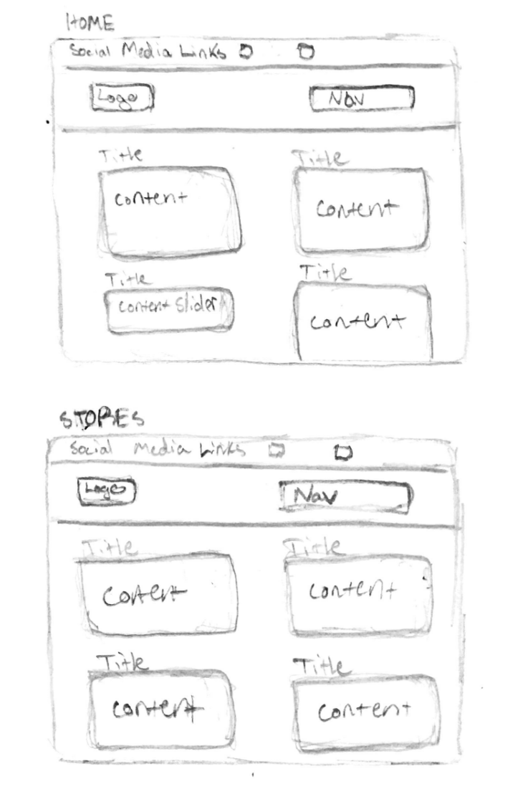
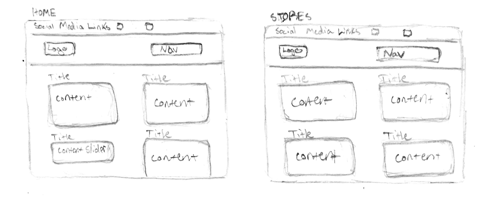

Inframe UX

 The Inframe web experience is designed to give artists and their artworks the most attention, in order to give users new perspectives, and inform them about artists or artworks that they may not have known about.
The Inframe web experience is designed to give artists and their artworks the most attention, in order to give users new perspectives, and inform them about artists or artworks that they may not have known about.
My Roles
Brand Strategist, Graphic Designer, Responsive Web Designer
Brand Promise
Inspired by my love for art and the intention to generate incomellaborating with peers from all sorts of art mediums.
Objective
A web experience, where users can easily find information about artists, subjects, organizations, artworks, collaborations, and products they may be interested in.
Outcome
The responsive website and app allows users to easily get information about the artists, subjects, and organizations who work with us, as well as details about the artwork and the products featuring the reproduction of the artwork.
Target Audience
Artists, Public Figures, Mid-High Income, Urban
Audience Needs
Users need a web experience where they can easily find information about an artist, or artwork that they may be interested in. So that they can find and purchase products made with a reproduction of the artwork, personalized by the artist and/or another collaborator.

Challenge
Presenting a variety of essential information to users, within a user friendly interface.
Solution
In order to present all the information clearly, I used separated content sections, within a flexible layout. Each section has an optional content slider, so users can slide through content in the selected sections for additional information.
Initial Sketches


Design Process
When I started the wirerframing process, I decided I wanted the users to quickly see an illustration of the brand’s goals and collaborative nature. This section is also an information slider which displays featured artwork.
During this time I experimented with the brands colors as well. I decided on a three color scheme to improve the contrast of different elements in the logo and in my layouts. I finished refining the desktop and app pages and created a style guide using the elements from the stationary and web collateral.


Wireframes

 Prototypes
Prototypes
The Story
I was inspired to create this project because I see a need for artist to be able to collaborate with subjects who have large followings, and vice versa, and for people to receive personalized products from public figures they follow. I created a brand that represents a innovative community of artists, and subjects.

These prototypes, are my first attempts designing the responsive website home and shop pages. I emphasized the store to be at the forefront of the hompage, however, after receiving feedback from my peers, I saw needed to bring more opportunities for users to learn more about the people involved with Slappy’s Garage as well. As you can see I made the change and brought more emphasis to the skateboard team when I designed the desktop pages.
Final Deliverables